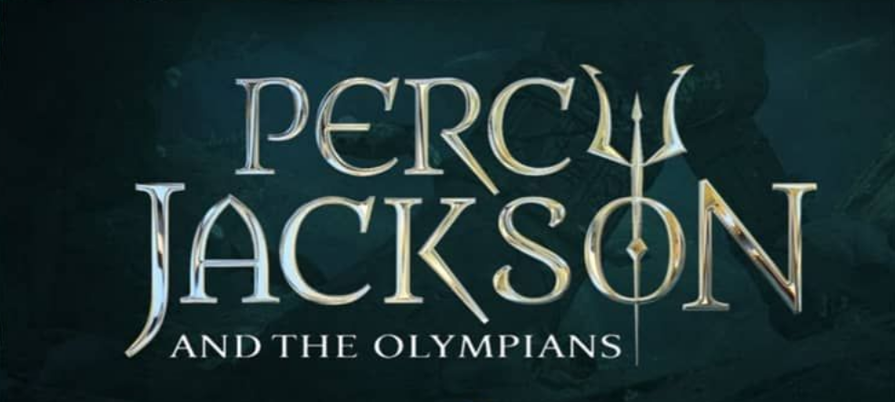

Ismerd meg ezeket!

Assassin's Creed
Milyen izgalmas lenne, ha az őseink össze tudásával rendelkezhetnénk? Az Assassin's Creed világában ez lehetséges. Egy új technológia segítségével kutathatjuk föl, hogy alakította és hogyan befolyásolja most is az emberiség sorsát egy titok háború. Ha szereted a science-fiction-t és erős a idegzeted ez neked való.
TovábbHarry Potter
J. K. Rowling siker-könyvsorozata a Harry Potter a fantasy műfaj egyik legnépszerűbb alkotása. Nem egy gyerek nőhetett fel egyszerre a kis túlélővel és fejthette meg a varázslóvilág titkait. A filmadaptációk is olyan jó sikerültek, hogy sokan nem is olvasták a könyveket, mondván: Azok hosszúak. Nincs annyi időm. Mégis azt javaslom merülj el a könyvekben is.
TovábbNarnia Krónikái
A gyermeki képzelőerő határtalan. „Micsodaaa, hogy ez most valóság?!” Narnia egy varázslatos hely, ami nem valami képzelgés. Ez a világ tele van meglepő szerzetekkel és varázslattal. C. S. Lewis könyvsorozata által, olyan kalandoknak lehetük részesei, amelyek közben is el kell gondolkoznunk, hogy ez most csak álom vagy valóság. Visszarepülünk a gyerekkor játékos hangulatába és annak szemüvegén keresztül élhetünk át izgalmas történeteket.
Tovább

Percy Jackson
Sokan, szerény személyem is, rajonganak az ókori kultúrákért. A történelem órák egyik legjobbja volt, mikor a görög-római hitvilág volt a téma. A sok isteneség és a róluk szóló történetenek kifogyhatatlan a tárháza. Ennek, a ma már letünt kornak modnot vilának a képzeteit ülteti át a jelenbe Rick Rionrad. Percy Jackson kaladjai újra életre keltik az ókori görög mitológia szereplőit.
TovábbTrónok Harca
A fatntasy műfaj újjabb ékkőve a Trónok harca. George R. R. Martin könyveiből készült sorozat, hatalmas sikert aratott. Aki szereti a középkor témáját, a ármánykodás és a sárkányok korát annak ez egy kihagyhatatlan tétel a listáról. Westeros világában részesei lehetünk, ahogy a nemes házak vérremenő küzdelmet vívnak a hatom ért, bevetve észt, furfangot, fegyvert és tüzet. Eközbe valami rettentő közlít északról.
Tovább